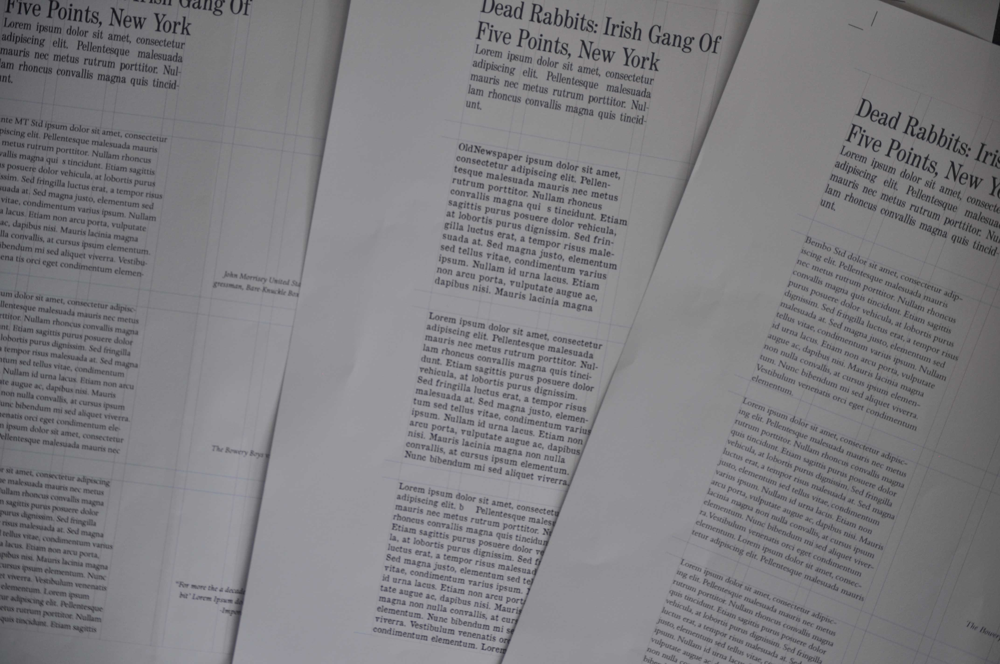
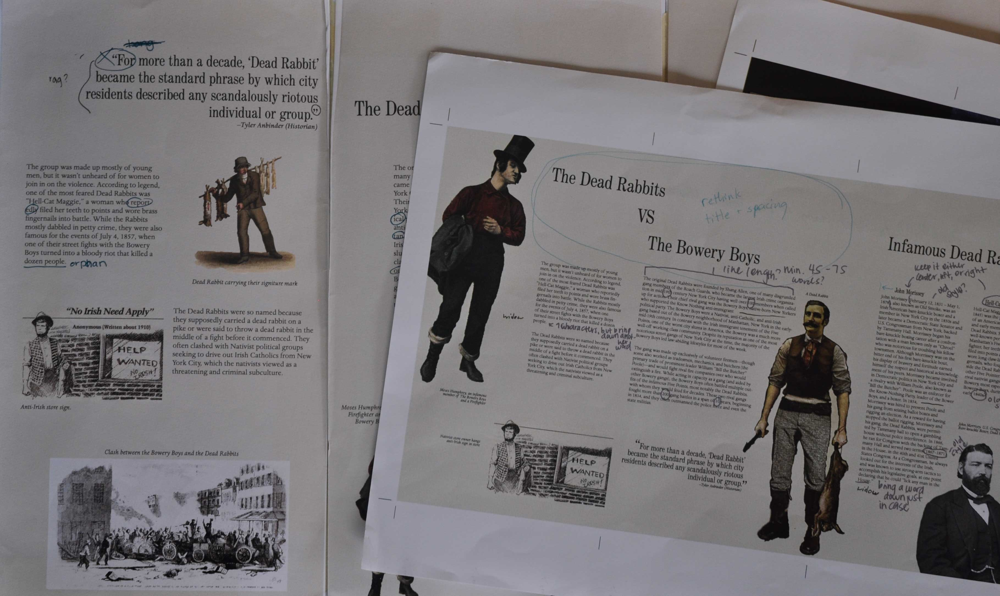

Dead Rabbits Brochure

Typography
Finding the write type faces for this Museum brochure was the first design step I took. Of the three design concepts I went with the typefaces of OldNewspaper, for heading, and Dante for body copy. This would give the brochure the Civil War-era aesthetic that would match the topic of the Dead Rabbits New York gang.

Drafts
After adding content and composing that content onto the brochure I had to begin the process of refining the design. This process involved finding typographical errors and finding better compositions for imagery and type.


Final
The final design had a more refined composition and interesting design. Information involving the Dead Rabbits exhibition are placed on the outside of the brochure while historical information about the Dead Rabbits gang are placed inside of the brochure.